The initial phase consisted of identifying open services through a port scan, which revealed the available attack surface of the target machine.
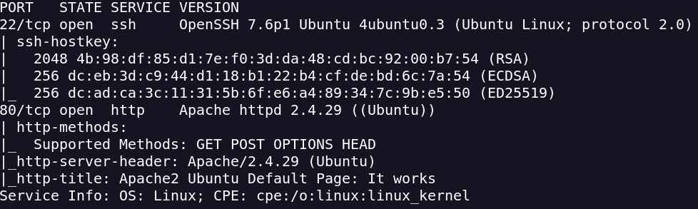
Once the exposed services were identified, directory enumeration was performed in order to discover hidden or unlinked web resources.
gobuster --wordlist=/usr/share/wordlists/dirbuster/directory-list-2.3-medium.txt dir -u http://10.10.10.171/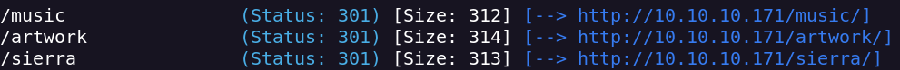
The enumeration revealed a /music endpoint which redirected to the /ona/ directory, indicating the presence of a web application.
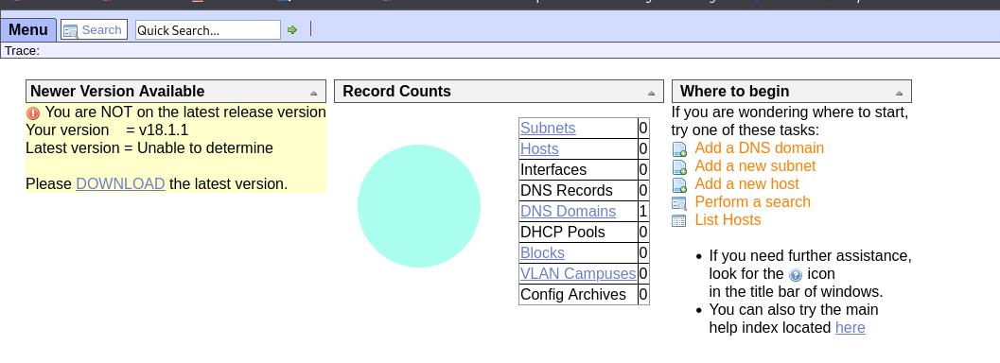
The application was identified as OpenNetAdmin version 18.1.1.
Using searchsploit, it was confirmed that this specific version is vulnerable to remote code execution.
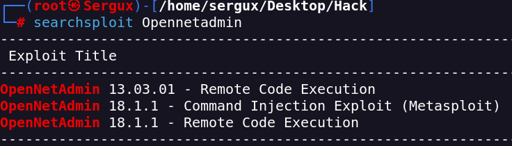
The vulnerability was exploited successfully, resulting in a shell as the www-data user.
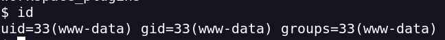
At this stage, the shell was limited, so an attempt was made to improve it for better interaction with the system.
During local enumeration, two user accounts were identified on the system.
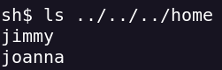
Further inspection of the OpenNetAdmin configuration files revealed database credentials.
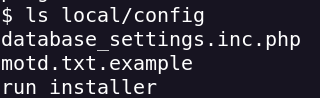
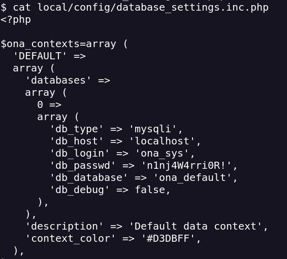
By reusing the discovered password, it was possible to authenticate via SSH as the user jimmy.
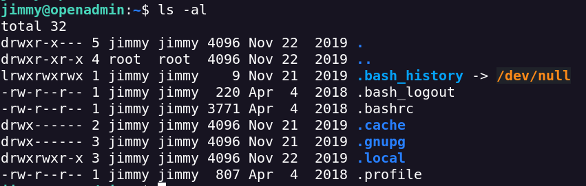
After gaining SSH access, an interesting internal port was found listening locally.
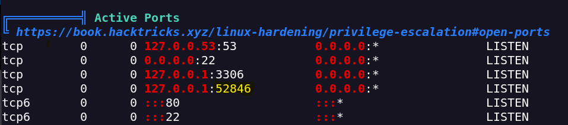
To interact with this service, SSH port forwarding was configured.
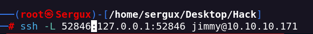
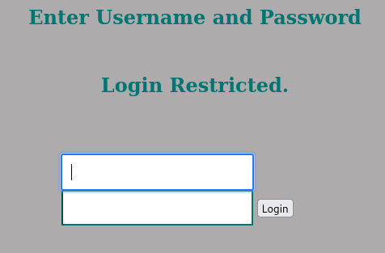
Browsing the forwarded service led to the discovery of a POST request handler located under /var/www/internal.
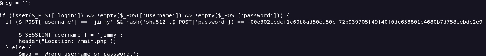
This request contained the username jimmy along with a SHA-512 password hash.
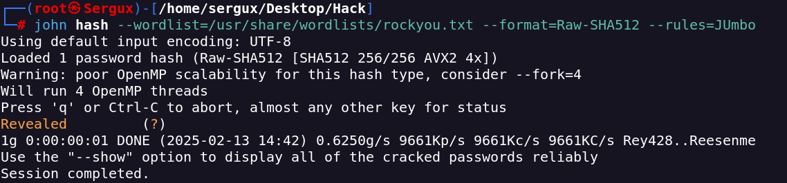
The hash was cracked, allowing authentication with the recovered credentials.
Accessing the application revealed a private SSH key, likely belonging to the user joanna.
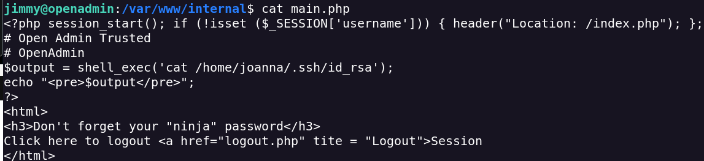
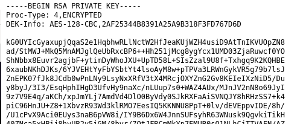
Since the private key was protected by a passphrase, it was extracted and cracked using ssh2john.
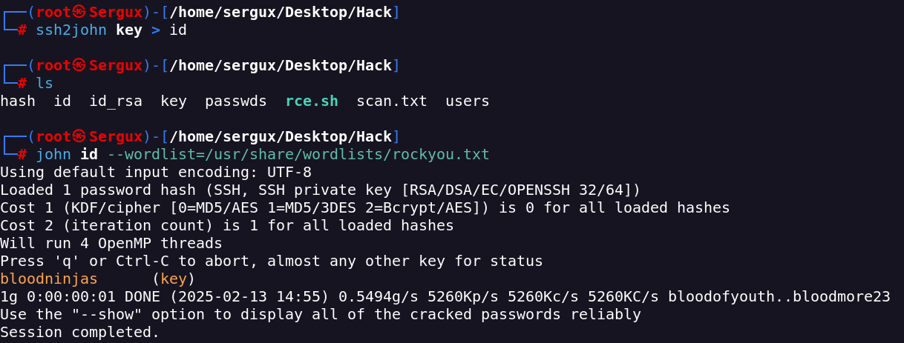
The recovered password was confirmed to be the passphrase for the private key.
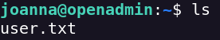
After logging in as joanna, the sudo privileges were enumerated.
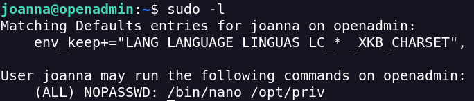
The output showed that the nano editor could be executed as root without a password.
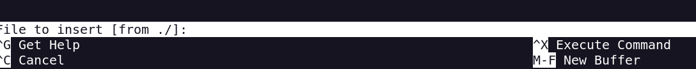
Since nano allows reading arbitrary files and executing commands, this capability was leveraged to access privileged files.
As a result, the root.txt flag was successfully read, completing the privilege escalation.